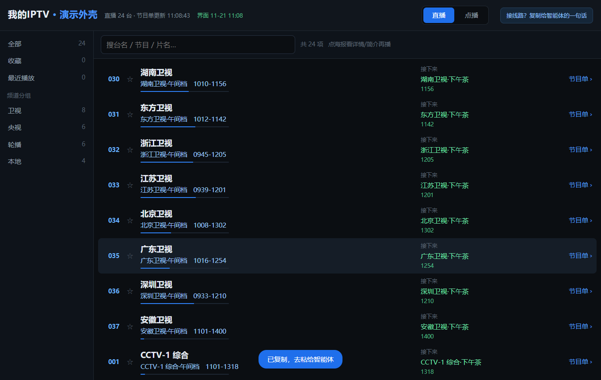

不管你用的是哪家宽带，模板只认数据流。有 m3u 清单就改一行配置，一行代码都不用写。
直播、点播、详情、以及直接写在页面上的那句「给智能体的话」。



它不会反问你要地址，而是自己在这台电脑和当前网络里找数据流：本机在跑的服务、运营商 IPTV 抓的源、磁盘上的 m3u 与 xmltv 清单。
打开智能体对话框，整段粘过去，不用改字。
| 步骤 | 做什么 |
|---|---|
| 探路 | 扫本机在跑的服务、磁盘上的 m3u / xmltv、旧的 IPTV 项目，把能用的数据流列出来 |
| 接入 | 有清单：改 config.json（m3u_path 直播、vod_m3u 点播）；有服务：照 转发示例.py 转发 |
| 快检 | tools\模板快检.py 起临时端口把所有接口打一遍，必须出「可以交」，并把原始输出贴给你 |
| 交付 | 装桌面图标，双击确认台表能出来、点开能播；不通过就说清卡在哪一项 |
config.json 的 mpv 列表里填任意播放器路径。
一个都没有时页面会提示你先装一个（推荐 VLC，官网直装）。msedge --app 弹一个无地址栏的应用窗口，看起来像独立程序；
不需要装额外运行时。http://这台电脑的IP:8905/ 就能用，
播放器也能直接吃 /live.m3u。跨网络不行，也不做账号共享。